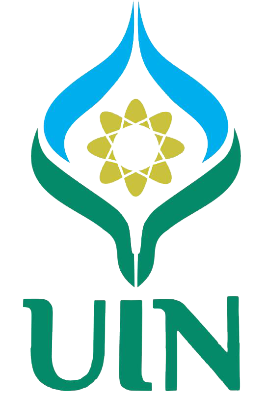

Education

Antasari State Islamic University
Bachelor of Computer Science - S.Kom, Information Technology
September 4, 2023 - July, 2027 (Expected)
GPA: 3.91 / 4.00
Banjarbaru City, South Kalimantan, Indonesia
Al Mazaya Islamic Senior High School
Science And Mathematics Major
July 16, 2018 - May 04, 2021
GPA: 3.80 / 4.00
Banjarmasin City, South Kalimantan, Indonesia
Certifications
TensorFlow: Advanced Techniques Specialization
Udemy
Issued on Dec 2023
Credential ID WFHMWEMK8DJ4
View Credentials

Advanced Deployment Scenarios with TensorFlow
Dicoding
Issued on Nov 2023
Credential ID BANKYL64ABPU
View Credentials
Experiences

Accreditation Documentation Assistant
Information Technology Program
May 27 - June 02, 2024
Prepared and organized accreditation documents, ensuring compliance with BAN-PT standards
Assisted in drafting and reviewing reports under the guidance of Munsyi, S.Kom., M.T
Web Administrator
Information Technology Program
January 01 - June 01, 2024
Managed and maintained the official website of the Information Technology Study Program (ti.uin-antasari.ac.id).

IT Support & Assistance
Lambung Mangkurat University
November 02, 2023
Delivered technical support for The International Conference on Energy, Sustainable Development, and Management (ICESDM)
2023.
Ensured smooth operation of hardware, software, and audiovisual systems for virtual and in-person sessions.
Resolved technical issues efficiently and facilitated seamless conference activities under the guidance of Munsyi, S.Kom., M.T.

Frontend Developer & Content Creator
Caripengetahuan.Id
August 15, 2019 - May 20, 2021
Developed and maintained website front-end to ensure optimal performance and seamless user experience.
Contributed to achieving 1.2 million total readers over two years and a record of 1,081 online users at the same time
Organization
Antasari Programming Team
Member
December 02, 2024 - Present
Intra-Departmental Semi-Autonomous Organization in the Information Technology Department
Participating in coding competitions to challenge and refine programming skills

Muhammadiyah University Student Association
Head of Media and Communications
September 08, 2024 - Present
Commissionary Leadership at Antasari State Islamic University Banjarbaru
Leading the creation and distribution of content across various platforms to enhance the association’s visibility.